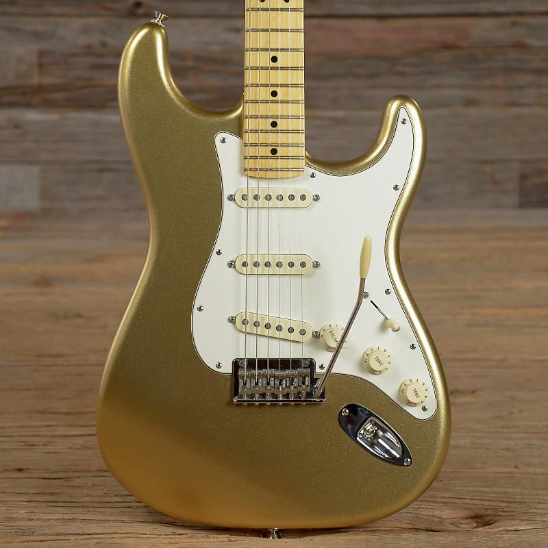

Guitars
I love to play my guitars everyday, even when I am stressed have a lot of homework. This is a picture of my favorite guitar.
I have been playing the guitar since I was five years old! My parent's gave me a guitar for my fifth birthday, and I have practiced every day since then! I currently own eight guitars! My favorite guitar players are Stevie Ray Vaughan, Jimi Hendrix, David Gilmour, and Ed Sheeran.